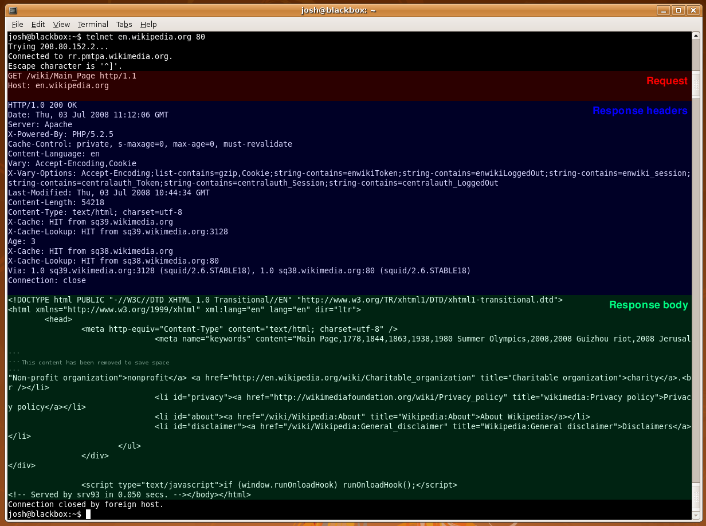

HTTP and How the Web Works
Websites are Magic
- How does a URL result in a web page being loaded?
- How does a webpage get turned into what we see in a browser?
The Server-Client Relationship
- Simple interpretation: There are many clients that access a
single server. This server is accessed because it has content
the clients want.
- The server can do something or has some resource the client
wants.
Hypertext Transfer Protocol (HTTP)
- Core to all sorts of things besides webpages
- Protocol involves a request and response
HTTP Requests
(Stolen form wikipedia)
- HTTP defines nine methods (sometimes referred to as "verbs")
indicating the desired action to be performed on the
identified resource.
- The available verbs are: HEAD, GET, POST, PUT, DELETE, TRACE,
CONNECT, PATCH, OPTIONS

HTTP Responses
An HTTP Response has a code associated with it. You probably are familar with some already.
- 1xx: Informational
- 2xx: Success
- 3xx: Redirect
- 4xx: Client error
- 5xx: Server error
A server response:
HTTP/1.1 200 OK
Date: Mon, 23 May 2005 22:38:34 GMT
Server: Apache/1.3.3.7 (Unix) (Red-Hat/Linux)
Last-Modified: Wed, 08 Jan 2003 23:11:55 GMT
Etag: "3f80f-1b6-3e1cb03b"
Accept-Ranges: bytes
Content-Length: 438
Connection: close
Content-Type: text/html; charset=UTF-8